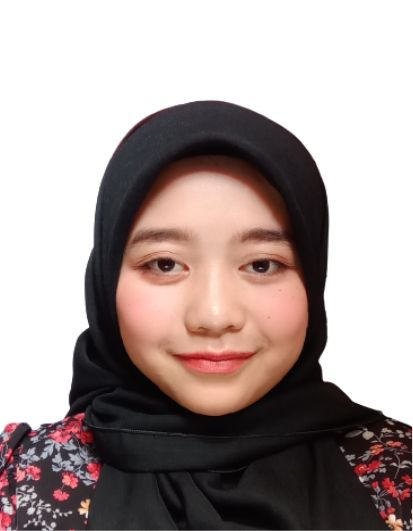

| Name | Tuan Khalidah Syazwana Binti Tuan Mohd Kasmawi |  |
| Date Of Birth | May 12, 2003 | |
| Religion | Islam | |
| Race | Malay | |
| Address | Street | Kampung Banggol Donas |
| Town | Manir | |
| District | Kuala Terengganu | |
| State | Terengganu Darul Iman | |
| Contact | Mobile Phone | 011-1298 5712 |
| Social Media | My Instagram! | |
| Website | Github | |
| Course and Institution | Software Engineering and UTHM | |
| Programming Skills | Java, C, HTML, C#, CSS, Phyton | |
| Personal Interest | As a software engineering student, I’m passionate about problem-solving and innovation. I enjoy bringing creativity and precision to my work, aiming to develop software solutions that are both effective and user-friendly. | |
| Future Plan in 2025 | Having a lot of good times with my family :) |